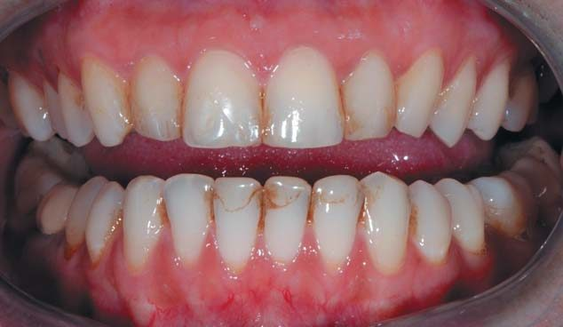
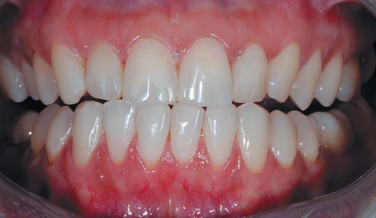

Своя справа · журнал «ДентАрт» 2022 №1
Нові виклики у спілкуванні лікар-стоматолог – пацієнт: підходи та практичні поради
New challenges in dentist – patient communication: approaches and practical advices
Скажи мені – і я забуду, покажи мені – і я запам'ятаю, дай зробити самому – і я зрозумію.Конфуцій
За останнє століття, та навіть кілька десятиліть, медицина і стоматологія зробили великий ривок уперед. Постійно винаходяться новинки, що роблять лікування пацієнта стоматологічного кабінету легшим, менш болісним і менш інвазивним. Та разом з цим прогресом відбулися й інші серйозні зміни, зокрема у стосунках лікарів-стоматологів і пацієнтів.
Раніше очікувалося, що лікар візьме на себе менторську роль як людина, котрій пацієнт довіряє, котра каже йому, що сталося і що робити. Пацієнт отримував діагноз, і від нього очікувалося виконання усіх рекомендацій лікаря.
На жаль чи на щастя, але часи змінюються. Ми живемо в ері споживання та споживача. Це означає, що пацієнт у вашому кріслі думає як споживач, навіть коли це стосується його чи її здоров'я. Пацієнти схильні до вибірковості і не обов'язково виконують рекомендації лікаря, хоча ви як лікар і розумієте, що дотримання цих рекомендацій було б передусім в інтересах пацієнта.
Про причини таких змін написано чимало соціологічних, психологічних та філософських праць, але сьогодні ми маємо справу з пацієнтом, який хоче отримати клінічний висновок і має відразу до негайного «продажу» послуг чи товарів. Отже, проаналізуймо ситуацію та шляхи виходу з неї.
Приймімо за аксіому, що лікар дбає про свого пацієнта, стан його здоров'я та самопочуття і хоче підібрати найефективніше лікування. Однак лікар, який просто дає інструкції, може зіткнутися з тим, що пацієнт необов'язково виконує вказівки, особливо якщо лікування потребує значних коштів або психологічних чи фізичних зусиль, а стан не є критичним чи не викликає больових відчуттів.
Лікарі ніколи не вчилися бути продавцями. Але коли ми хочемо переконати когось щось зробити, то говоримо про переваги обраного методу чи продукту. У продажах це називається «продаж переваг». Ми використовуємо цей підхід щодня, іноді навіть цього не усвідомлюючи.
У ситуаціях, коли пацієнт запитує: «Що б Ви зробили?», відповідати зі згадкою переваг – це природно. Ми відповідаємо щось на кшталт: «Я б обрав імплантацію, оскільки це найкращий варіант для втраченого зуба». Як би це парадоксально і нелогічно не звучало, але краще працює метод антитез.
Для того, щоб не бути голослівною, наведу приклад корекції поведінкової моделі пацієнта за обраною схемою. Я часто працюю з умовно здоровими людьми, і ця методика більше розрахована на некритичні стани, адже у випадку із серйозними патологіями вибір пацієнта мотивується втратою зубів чи больовими відчуттями, тому методика продажу переваг у вигляді збереження зубів або позбавлення больових відчуттів працює.
Як це працює у випадку співпраці з пацієнтом
1. На першому етапі стоматолог налагоджує стосунки з пацієнтом та збирає інформацію від нього. Лікар намагається вибудувати довгострокові відносини, що базуються на довірі. Немає небезпеки, що пацієнт може сприйняти це як продаж, – за умови, що не згадуються якісь конкретні рішення для лікування стану пацієнта.

2. Другий етап вимагає передачі інформації від стоматолога до пацієнта. Зазвичай пацієнтам потрібна певна стоматологічна грамотність, щоб вони могли ухвалювати розумні рішення. Зосередитися слід на шкідливих результатах існуючого стану, а не на вирішенні проблеми. Ця інформація вплетена в розмову, яка стосується не конкретно цього пацієнта, а є загальним коментарем про те, що може статися з цим конкретним станом. Ми досі не бралися до продажу переваг, тому що не говорили про рішення і не говорили конкретно про цього пацієнта.
3. Третій етап передбачає, що пацієнт чує розмову стоматолога і асистента. Використовувана мова проста, описова та фактична щодо того, що можна побачити. Про лікування не згадується. Пацієнт може бачити зображення своїх зубів і бере участь у розмові про те, що він бачить. Якщо ми створили відповідну стурбованість щодо довгострокових наслідків цього конкретного стану, пацієнт готовий до варіантів лікування.
4. Четвертий етап передбачає проходження різних варіантів. Щоб досягнути мети лікування, стоматолог має працювати над її досягненням та керувати пацієнтом. Але пацієнт не повинен думати, що мету йому нав'язали. Ми хочемо, щоб пацієнт відчував, що це повністю його рішення і ми підтримаємо все, що він обере.

Якщо використовувати цей підхід, варіант опору пацієнта обраній методиці мінімальний, а лікар може надати найкраще лікування пацієнтові і відкоригувати його стан.
Висновки
Стоматологія протягом останніх десятиріч зазнала багато змін. Змінилися підходи лікарів до пацієнтів та змінилися самі пацієнти. Наші пацієнти стали відносити себе до категорії клієнтів і вважати, що вони отримують послуги замість лікування.
На мою думку, лікарі мають залишатися передусім лікарями, не втрачати свою гідність та авторитет. Потрібно бути спрямованими на клієнтоорієнтованість і доступність якісних стоматологічних послуг. Дуже важливо спрямовувати свої дії на турботу не тільки про стоматологічне здоров'я пацієнта, але і про його загальний стан, спілкуючись із пацієнтом, цікавлячись його здоров'ям та оперуючи необхідними науковими й естетичними аргументами. Своєю турботою ми можемо зробити нашу націю освіченішою і здоровішою.